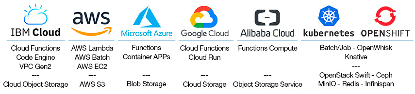

What is Lithops?¶
Lithops is a Python multi-cloud serverless computing framework. It allows to run unmodified local python code at massive scale in the main serverless computing platforms.
Lithops delivers the user’s code into the cloud without requiring knowledge of how it is deployed and run. Moreover, its multicloud-agnostic architecture ensures portability across cloud providers, overcoming vendor lock-in.
Lithops provides great value for data-intensive applications like Big Data analytics and embarrassingly parallel jobs.
It is specially suited for highly-parallel programs with little or no need for communication between processes.
Examples of applications that run with Lithops include Monte Carlo simulations, deep learning and machine learning processes, metabolomics computations, and geospatial analytics, to name a few.
Lithops facilitates consuming data from object storage (like AWS S3, GCP Storage or IBM Cloud Object Storage) by providing automatic partitioning and data discovery for common data formats like CSV.
Lithops abstracts away the underlying cloud-specific APIs for accessing storage and provides an intuitive and easy to use interface to process high volumes of data.
Quick Start¶
Lithops is available for Python 3.6 and up. Install it using pip:
pip install -U lithops
You’re ready to execute a simple example!
from lithops import FunctionExecutor
def hello(name):
return 'Hello {}!'.format(name)
with FunctionExecutor() as fexec:
fut = fexec.call_async(hello, 'World')
print(fut.result())
Use any Cloud¶
Lithops provides an extensible backend architecture that is designed to work with different compute and storage services available on Cloud providers and on-premise backends.
In this sense, you can code your application in Python and run it unmodified wherever your data is located at: IBM Cloud, AWS, Azure, Google Cloud and Alibaba Aliyun…
What is Lithops used for?¶
👍 Lithops is good at… |
👎 Lithops is bad at… |
|---|---|
Embarrassingly parallel applications |
Micro-services (blocking request-response APIs) |
Batch processing for Big Data analytics that consume data from object storage |
Stream processing |
Elastic applications where optimal compute resources cannot be established beforehand |
Applications that require specialized hardware like GPUs |
Stateful applications that make use of external services to mediate lightweight communication (like RabbitMQ or SQS) |
Applications that require heavy process to process communication (like MPI) |
Additional resources¶
Blogs and Talks¶
Simplify the developer experience with OpenShift for Big Data processing by using Lithops framework
Speed-up your Python applications using Lithops and Serverless Cloud resources
CNCF Webinar - Toward Hybrid Cloud Serverless Transparency with Lithops Framework
Using Serverless to Run Your Python Code on 1000 Cores by Changing Two Lines of Code
Decoding dark molecular matter in spatial metabolomics with IBM Cloud Functions
Your easy move to serverless computing and radically simplified data processing Strata Data Conference, NY 2019
Predicting the future with Monte Carlo simulations over IBM Cloud Functions
Process large data sets at massive scale with Lithops over IBM Cloud Functions
Papers¶
Towards Multicloud Access Transparency in Serverless Computing - IEEE Software 2021
Primula: a Practical Shuffle/Sort Operator for Serverless Computing - ACM/IFIP International Middleware Conference 2020. See Primula presentation here
Bringing scaling transparency to Proteomics applications with serverless computing - 6th International Workshop on Serverless Computing (WoSC6) 2020. See Workshop presentation here
Serverless data analytics in the IBM Cloud - ACM/IFIP International Middleware Conference 2018